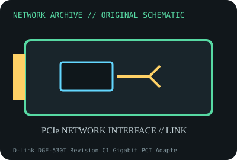

[ MODEL-SPECIFIC NETWORK HARDWARE ]
D-Link DGE-530T Revision C1 Gigabit PCI Adapter
32-bit PCI Gigabit Ethernet desktop/network adapter. Confirm exact product label and revision before applying specifications.

IDENTIFICATION: Confirm manufacturer PID, hardware revision, device ID or module suffix. Nominal standards/link rates are not measurements of payload performance.
Exact specifications and compatibility
| Dedicated subcategory | Legacy networking adapters |
|---|---|
| Exact product/model | D-Link DGE-530T Revision C1 Gigabit PCI Adapter |
| Bus, ports and physical interface | 32-bit PCI 2.2 bus; one RJ-45 10/100/1000BASE-T port. |
| PHY, radio or protocol | Revision-specific controller; auto-negotiated 10/100/1000BASE-T. D-Link revisions may have changed silicon. |
| Nominal rate (not measured) | Up to 1Gb/s nominal line rate; no measured throughput claim. |
| Measured throughput | No measured benchmark is claimed for a physical specimen. A valid result must record host/peer, link partner, media/cable, driver/firmware, traffic pattern, test tool and duration. |
| Drivers, OS and firmware | D-Link offers archived revision-specific Windows driver downloads; Linux in-kernel support depends on identified controller and distribution. |
| Compatibility | Conventional PCI slot, correct driver for revision and four-pair Cat5e-or-better cabling for Gigabit. |
| Variant warning | DGE-530T revisions are not necessarily same-chipset; check PCB “C1” marking and device ID before selecting driver. Do not assume label alone determines support. |
Model and revision notes
DGE-530T revisions are not necessarily same-chipset; check PCB “C1” marking and device ID before selecting driver. Do not assume label alone determines support.
D-Link offers archived revision-specific Windows driver downloads; Linux in-kernel support depends on identified controller and distribution.
Conventional PCI slot, correct driver for revision and four-pair Cat5e-or-better cabling for Gigabit.
Archival, ESD and preservation notes
Photograph board and revision markings, MAC label and controller. Store dry and antistatic; preserve bracket and driver provenance.
Document source URL, access date, document revision and specimen label/condition. Preserve without credentials or private configuration.
Primary manufacturer and standards sources
- D-Link DGE-530T revision C1 support/downloadsPrimary manufacturer or standards documentation; verify exact SKU and host revision.
- D-Link product documentation portalPrimary manufacturer or standards documentation; verify exact SKU and host revision.
- IEEE 802.3 Ethernet standardsPrimary manufacturer or standards documentation; verify exact SKU and host revision.
Manufacturer statements cover the named part or its documented product family; the exact labeled revision and vendor compatibility list take precedence.